Chapter 15 Boosting
Boosting, bagging, and Random Forests (RF) are all ensemble learning techniques that combine multiple models to improve prediction accuracy. Bagging (Bootstrap Aggregating) reduces variance by training multiple models on bootstrap samples and averaging their predictions. Random Forests extend bagging by introducing feature randomness at each tree split, further decorrelating models to reduce both bias and variance.
Boosting, unlike bagging and RF, is a sequential process where each model corrects the errors of its predecessor. Instead of training models independently, boosting adjusts weights to focus on difficult-to-predict instances, reducing bias while potentially affecting variance. The key idea is to train weak learners—typically decision trees—incrementally, improving performance at each step. The process follows three main steps: (1) start with a simple model, (2) focus subsequent models on previous errors, and (3) combine predictions through weighted averaging.
This chapter covers leading boosting algorithms, including AdaBoost, Gradient Boosting, and XGBoost, discussing their mechanics, regularization techniques, and applications in economics and social sciences. We also explore how to implement boosting algorithms in R.
15.1 Types of Boosting Models
Boosting methods refine predictions by building models sequentially, with each step correcting the errors of the previous one. While all boosting algorithms follow this principle, they differ in how they adjust weights and minimize errors.
- Gradient Boosting Machines (GBM): A flexible and widely used approach that minimizes a specified loss function by sequentially fitting new models to the gradient (direction of steepest descent) of the error. GBM can handle both regression and classification problems, making it a foundational boosting technique.
- AdaBoost (Adaptive Boosting): One of the earliest boosting algorithms, AdaBoost assigns higher weights to misclassified instances, forcing subsequent models to focus on harder cases. While primarily used for classification, it laid the groundwork for modern boosting techniques.
- XGBoost (Extreme Gradient Boosting): An optimized, high-performance extension of GBM designed for speed and efficiency. It includes advanced regularization, parallelization, and handling of missing values, making it a top choice for large datasets and competitive modeling. XGBoost has become the most widely used boosting algorithm due to its efficiency, scalability, and strong predictive performance. Its ability to distribute computations across multiple machines further improves its scalability, making it ideal for handling large datasets. These advantages have cemented XGBoost as a go-to choice in both machine learning competitions and real-world applications, particularly in fields like finance, healthcare, and economics. We will also show how to use this method in selection on observables.
- LightGBM: A highly efficient gradient boosting framework that grows trees leaf-wise instead of level-wise, leading to faster training and lower memory usage. It is particularly suited for large-scale datasets.
- CatBoost: Developed by Yandex, CatBoost is optimized for categorical features, reducing the need for extensive preprocessing. It is designed to handle categorical data efficiently while preventing overfitting.
- LPBoost (Linear Programming Boosting): Uses linear programming to optimize the weights assigned to weak learners, focusing on maximizing the margin between classes.
- BrownBoost: A variation of AdaBoost designed to handle noisy data by adjusting the weight update process to be more robust to outliers.
- TotalBoost: A modification of AdaBoost that ensures the total weight assigned to misclassified instances remains bounded, preventing excessive focus on hard-to-classify cases.
- LogitBoost: Based on logistic regression, LogitBoost modifies AdaBoost by using a weighted log-likelihood loss, making it more stable for classification tasks.
Each of these methods refines the boosting framework by addressing different challenges, such as computational efficiency, handling categorical variables, or reducing overfitting. Among them, Gradient Boosting Machines (GBM) serve as the foundation for many advanced variants, including XGBoost, LightGBM, and CatBoost. Understanding GBM is essential for grasping how these enhancements improve performance. The next section explores Gradient Boosting Machines (GBM) in detail.
15.2 Gradient Boosting Machines (GBM)
Gradient Boosting Machines (GBM) sequentially fit new models to refine predictions, with each step correcting errors from the previous ones. The “gradient” in GBM refers to the direction and magnitude of model updates, determined through gradient descent on the loss function. This allows GBM to be applied to both regression and classification problems, making it a versatile tool in ensemble learning.
While GBM is highly effective, it requires careful hyperparameter tuning to achieve optimal performance. Its flexibility comes at a computational cost, as training can be slow, especially for large datasets. However, when properly tuned, GBM often delivers strong predictive accuracy, making it a preferred choice in many real-world applications.
GBM stands out with key characteristics that set it apart from earlier boosting methods. It minimizes gradients of a specified loss function, providing flexibility in handling different problem types. Unlike AdaBoost, which primarily focuses on classification, GBM supports various loss functions, allowing for both regression and classification tasks. Additionally, it offers extensive customization through hyperparameters, enabling adaptation to different datasets and modeling needs.
In summary, GBM is a powerful and adaptable boosting algorithm known for its accuracy across diverse applications. While other boosting methods have their own strengths, GBM serves as a foundational approach, with advanced versions like XGBoost and LightGBM improving upon its efficiency and scalability. The choice of algorithm depends on the trade-offs between computational cost, accuracy, and ease of use.
15.2.1 Gradient Boosting Algorithm Steps
- Initialize the model: Start with a simple model, such as a single leaf node predicting the average target value.
- Calculate residuals: Compute the difference between predicted and actual values.
- Fit a new model to residuals: Train a model to predict the residuals from the previous step.
- Update the model: Combine the new model with previous predictions to improve accuracy.
- Repeat: Iterate steps 2–4 until a stopping criterion is met (e.g., max iterations or minimal improvement).
By iteratively fitting new models to the residuals, GBM gradually improves predictions. The final output is the sum of predictions from all models, weighted by learning rates and other tuning parameters.
15.2.1.1 Example: Gradient Boosting for Regression
In this section, we demonstrate how Gradient Boosting Machines (GBM) work through a step-by-step example. We will generate a synthetic dataset, build an initial regression tree, iteratively improve it by fitting new trees to residuals, and visualize the impact of boosting.
Step 1: Simulating Data and Initial Model
First, we generate a dataset where the response variable \(y\) follows a noisy sine function. We then fit a simple regression tree as the initial model.
library(rpart)
library(ggplot2)
library(dplyr)
library(gbm)
# First we will simulate our data
n <- 300
set.seed(1)
x <- sort(runif(n) * 2 * pi)
y <- sin(x) + rnorm(n) / 4
df <- data.frame("x" = x, "y" = y)
plot(df$x, df$y, ylab = "y", xlab = "x", col = "grey")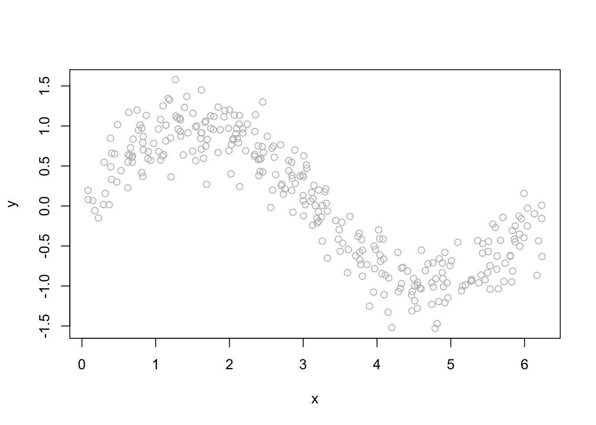
We now initialize the boosting process by fitting a single regression tree. This tree provides an initial prediction, which will be refined in subsequent steps.
library(rpart)
# Initiate the matrix to store the predictions
B = 100
h = 1.8 # shrinkage parameter
boost <- matrix(0, nrow = n, ncol = B) # 100 trees
# Regression tree
in_model <- rpart(y ~ x, data = df)
yp <- predict(in_model) # using the entire data
# Store the first predictions
boost[ ,1] <- yp * h
# Plot for single regression tree
plot(df$x, df$y, ylab = "y", xlab = "x", col = "grey")
lines(df$x, yp, type = "s", col = "blue", lwd = 3)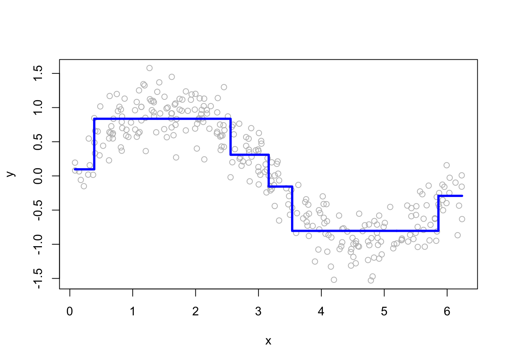
At this point, we have a single regression tree that provides a rough estimate of \(y\). However, this model is limited and will be improved using boosting. Now, we will have a loop that will “boost” the model. What we mean by boosting is that we seek to improve yhat, i.e. \(\hat{f}\left(x_i\right)\), in areas where it does not perform well by fitting trees to the residuals.
Step 2: Iterative Boosting Process The key idea in boosting is to sequentially train models that correct the residuals of previous predictions. At each iteration, we compute the residuals, fit a new tree to them, and update the overall prediction.
df$yr <- df$y - h * yp #First iteration
# Boosting loop for t times (trees)
for (t in 2:B) {
# Fit a regression tree to the residuals
fit <- rpart(yr ~ x, data = df)
yp <- predict(fit, newdata = df)
# Store the predictions
boost[, t] <- h * yp
# Update the residuals
df$yr <- df$yr - h * yp
}
str(boost)## num [1:300, 1:100] 0.174 0.174 0.174 0.174 0.174 ...Here, each iteration refines the previous predictions, reducing the overall error. Now, we will plot the predictions from the first 100 trees.
Step 3: Combining Predictions and Visualization
To obtain the final prediction, we sum the contributions from all boosting iterations. We then visualize how predictions evolve as more trees are added.
# Function to plot a single tree and boosted trees for different t
viz <- function(M) {
# Boosting
yhat <- apply(boost[, 1:M], 1, sum) # This is predicted y for depth M
# Plotting
plot(df$x, df$y, ylab = "", xlab = "", col = "grey") # Data points
lines(df$x, yhat, type = "s", col = "red", lwd = 3) # line for boosting
}
# Run
viz(100)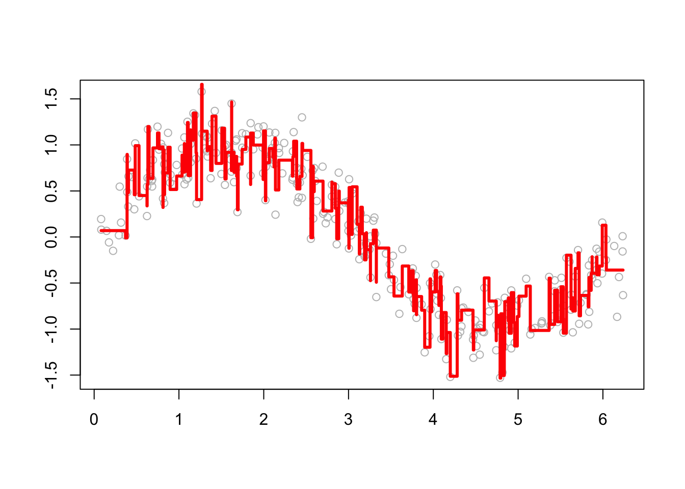
We see that as boosting progresses, the model captures the underlying pattern in the data more effectively. To make the boosting process more flexible, let’s define a function that allows for tuning key parameters (\(B\), \(M\), and \(h\) as inputs and returns the predictions).
library(rpart)
# Function to predict
boosting <- function(B, M, h, df) {
if (M > B) stop("M should be less than or equal to B")
n <- nrow(df)
boost <- matrix(0, nrow = n, ncol = B) # B trees
model <- rpart(y ~ x, data = df)
yp <- predict(model, df) # using the entire data
boost[, 1] <- yp * h # Store the first predictions
df$yr <- df$y - h * yp #First iteration error
for (t in 2:B) {
fit <- rpart(yr ~ x, data = df)
yp <- predict(fit, newdata = df)
boost[ ,t] <- yp * h
df$yr <- df$yr - h * yp
}
yhat <- apply(boost[, 1:M], 1, sum) # This is predicted y for depth M
return(yhat)
}This function allows us to specify the number of trees (B), the number of iterations used for predictions (M), and the learning rate (h).
15.2.2 Hyperparameter Tuning in GBM
The performance of GBM depends heavily on the choice of hyperparameters. Below, we examine how the learning rate (h) and the number of iterations (M) affect predictions. Here are a few examples of how the predictions change as we change h.
# Plot
for (i in c(0.2, 0.5, 1, 1.4)) {
yhat <- boosting(100, 100, i, df)
plot(df$x, df$y, ylab = "y", xlab = "x", col = "grey")
lines(df$x, yhat, type = "s", col = "red", lwd = 3)
}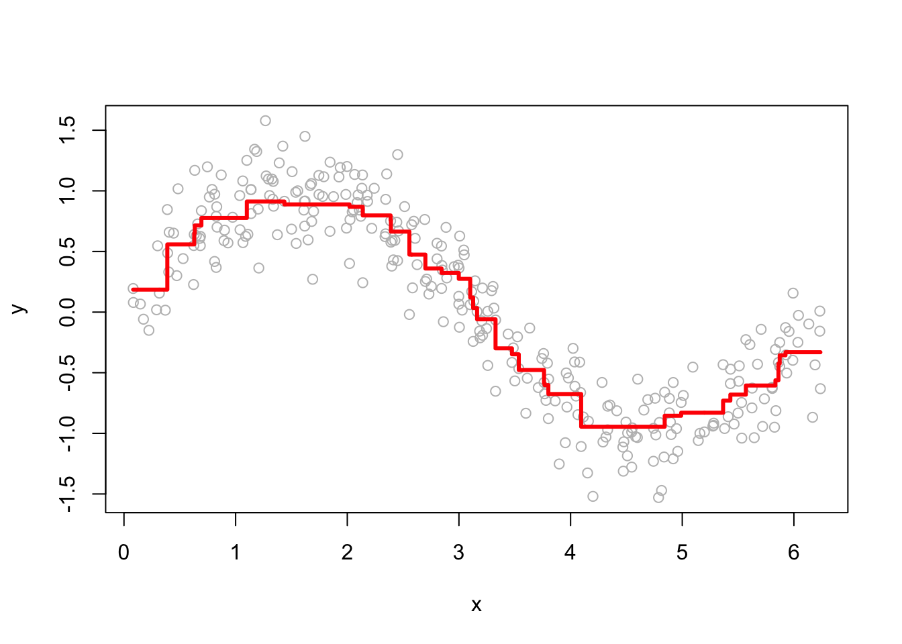
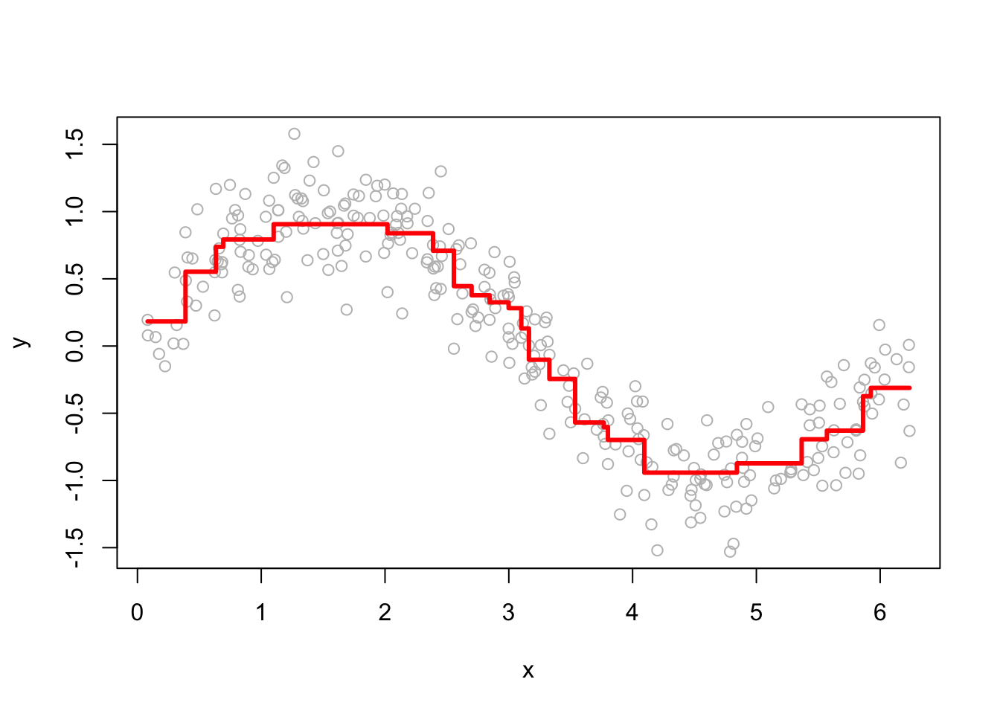
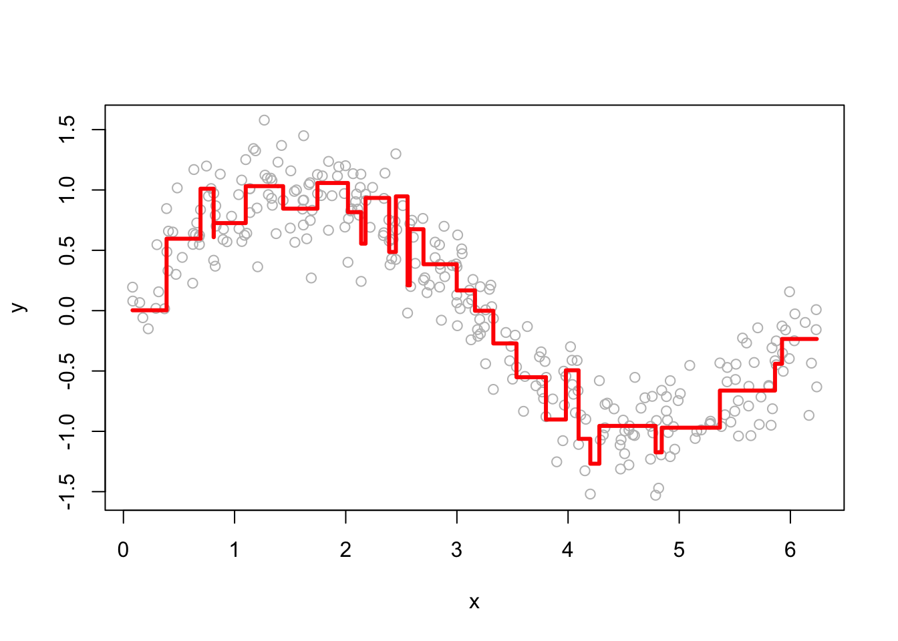
Smaller h values lead to more conservative updates, while larger values make faster updates but risk overfitting. Here are a few examples of how the predictions change as we change M.
# Plot
for (i in c(2, 15, 50, 200)) {
yhat <- boosting(200, i, 0.03, df)
plot(df$x, df$y, ylab = "y", xlab = "x", col = "grey")
lines(df$x, yhat, type = "s", col = "blue", lwd = 3)
}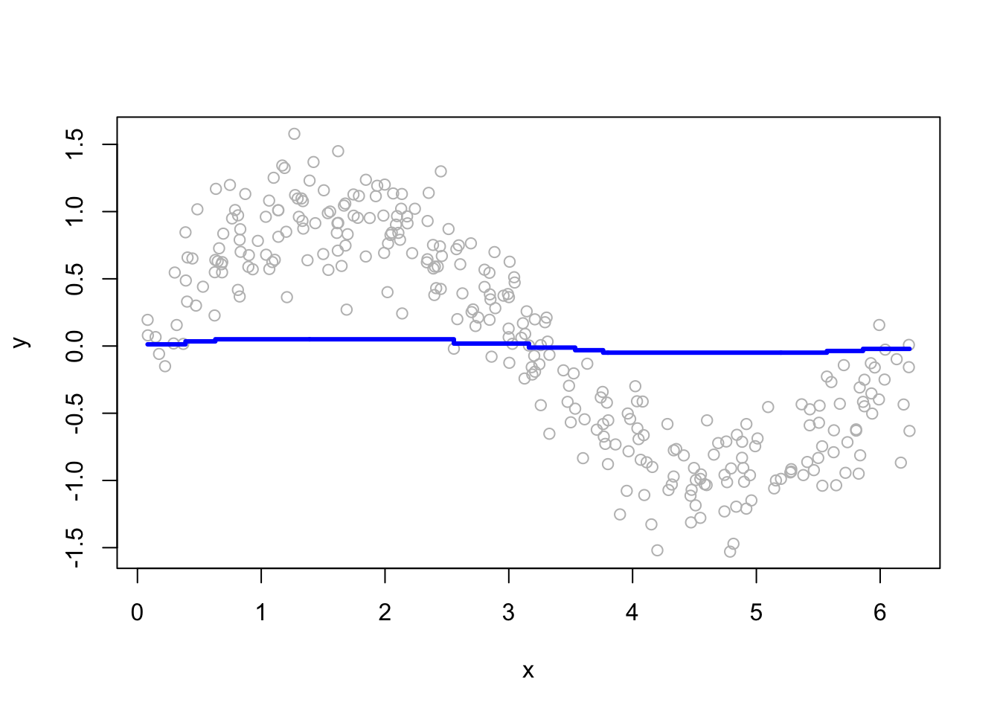
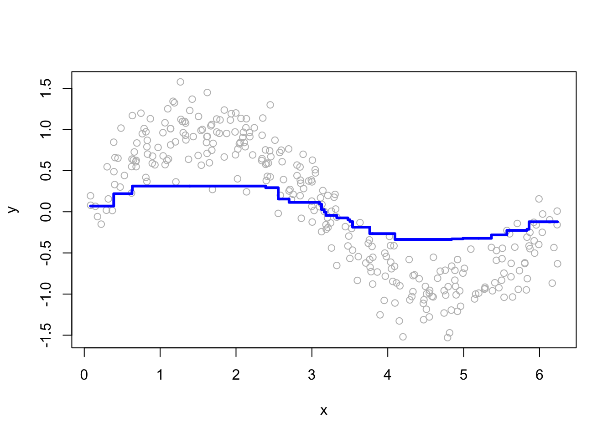
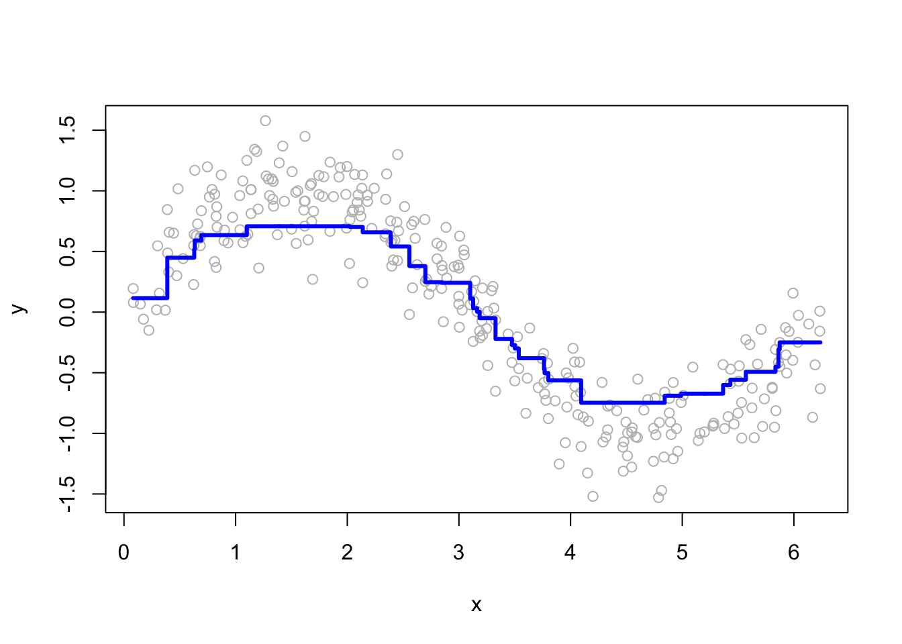
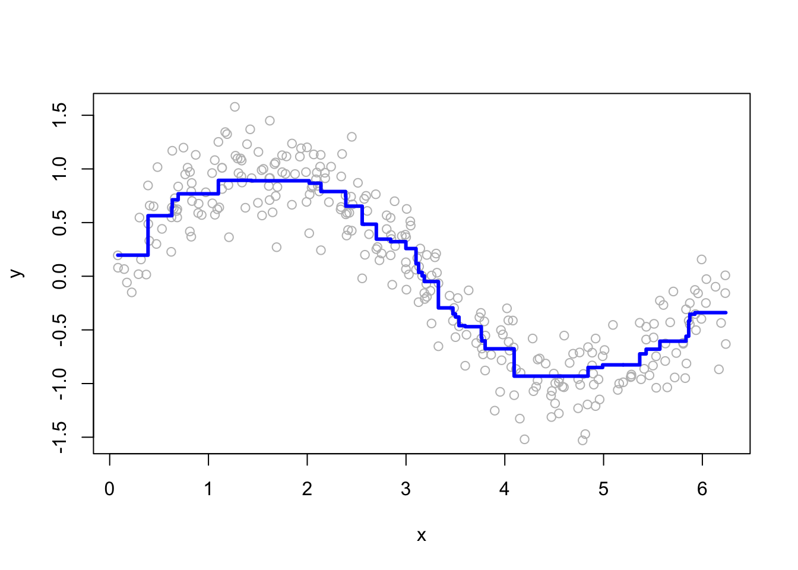
More boosting iterations refine predictions, but too many can lead to overfitting. Selecting M requires a balance between bias and variance.
This example illustrates how GBM iteratively refines predictions by fitting new models to residuals. We demonstrated the core boosting steps, visualized the impact of different hyperparameters, and provided a flexible function for tuning. These concepts extend directly to more advanced implementations like XGBoost and LightGBM, which build on GBM’s foundation with additional optimizations for speed and efficiency.
15.3 GBM in R
Instead of manually implementing gradient boosting, we can use the gbm package in R, which provides a flexible and efficient way to fit gradient boosting models. The gbm() function allows for extensive customization through various hyperparameters, making it adaptable to a wide range of problems. It supports both regression and classification and includes built-in mechanisms for model selection and overfitting control.
The key tuning parameters in gbm fall into two categories:
- Boosting parameters: Control the number of boosting iterations (
n.trees = 100) and the learning rate (shrinkage = 0.1). The learning rate determines how much each new tree contributes to the model, affecting the trade-off between speed and accuracy.
- Tree parameters: Define the structure of individual trees. The maximum depth (
interaction.depth = 1) controls how complex each tree can be, whilen.minobsinnode = 10sets the minimum number of observations required at a terminal node, affecting the model’s granularity.
Internal Training and Model Selection
The gbm algorithm offers three internal methods for selecting the optimal number of boosting iterations:
- Out-of-Bag (OOB) Estimation: Uses bootstrap sampling to estimate prediction error without requiring a separate validation set. The error improvement at each iteration is tracked using
oobag.improve.
- Test Set Validation: A fraction of the dataset is held out as a test set, regulated by
train.fraction. The model is trained ontrain.fraction * nrow(data), and the test set is used to evaluate performance. This is not cross-validation but can be combined with external loops for repeated testing.
- k-Fold Cross-Validation (
cv.fold): Splits the dataset intokfolds and fitskmodels to compute cross-validation error. Ifcv.folds = 5,gbmfits five models and selects the best iteration based on the average error. A final model is then trained on the full dataset using the optimal number of iterations. The best iteration is reported incv.error.
To introduce randomness and improve generalization, gbm includes the bagging fraction (bag.fraction), which applies stochastic gradient descent by training each tree on a random subset of the data. This helps reduce overfitting while maintaining efficiency.
For more details, refer to the official documentation: GBM Vignette.
Example: GBM Without Hyperparameter Tuning
In this example, we fit a basic gradient boosting model using the gbm package without extensive hyperparameter tuning. We use the Hitters dataset from the ISLR package, which contains baseball player statistics, including salary. The goal is to predict Salary using all available features. Since salaries are highly skewed, we apply a logarithmic transformation for better model performance.
library(ISLR)
library(gbm)
# Load and preprocess data
data(Hitters)
df <- Hitters[complete.cases(Hitters$Salary), ] # Remove missing values
df$Salary <- log(df$Salary) # Log-transform salary
# Fit GBM model
boos <- gbm(Salary ~ ., distribution = "gaussian",
n.trees = 5000, interaction.depth = 3,
shrinkage = 0.01, data = df,
bag.fraction = 0.5, cv.folds = 10)
boos # Print model summary## gbm(formula = Salary ~ ., distribution = "gaussian", data = df,
## n.trees = 5000, interaction.depth = 3, shrinkage = 0.01,
## bag.fraction = 0.5, cv.folds = 10)
## A gradient boosted model with gaussian loss function.
## 5000 iterations were performed.
## The best cross-validation iteration was 758.
## There were 19 predictors of which 19 had non-zero influence.Here, we specify the Gaussian distribution (distribution = "gaussian") since salary is a continuous variable. The model runs 5000 boosting iterations (n.trees = 5000), with an interaction depth of 3, meaning each tree can have up to three splits. The learning rate (shrinkage = 0.01) controls how much each tree contributes to the final prediction, and bagging fraction (bag.fraction = 0.5) ensures that each tree is trained on a random 50% subset of the data. Additionally, we use 10-fold cross-validation (cv.folds = 10) to evaluate model performance.
Selecting the Optimal Number of Trees
The function gbm.perf() helps identify the best number of boosting iterations based on cross-validation performance.
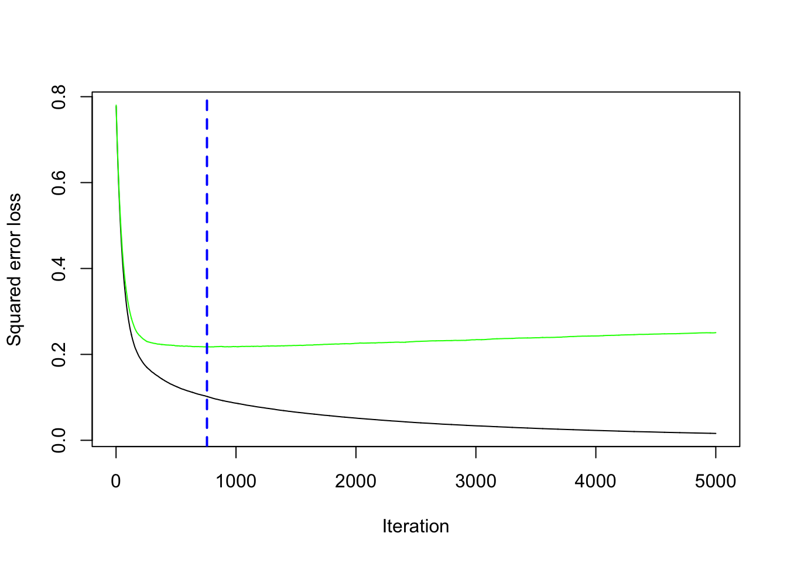
This function plots the cross-validation error and suggests the number of trees that minimize the error, helping avoid overfitting.
Visualizing Cross-Validation Error
To manually inspect the cross-validation error and determine the best iteration:
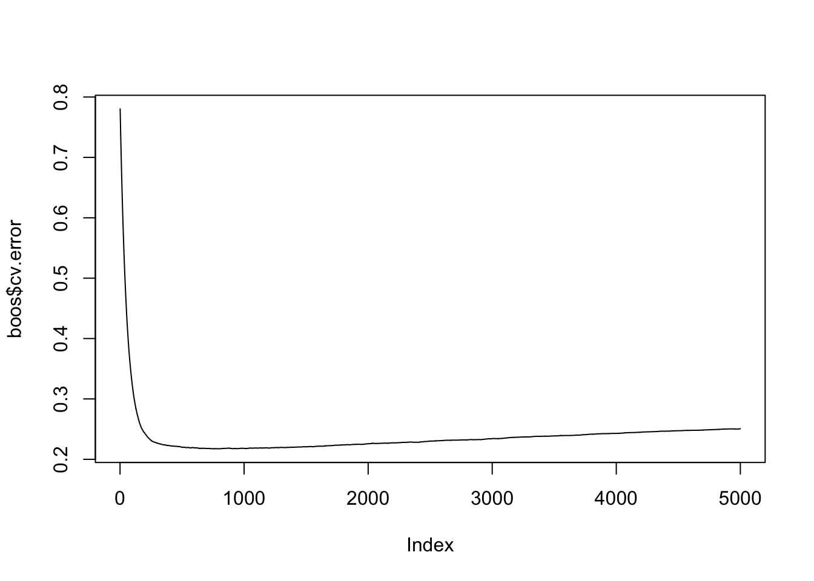
best <- which.min(boos$cv.error) # Find the iteration with the lowest error
best # Optimal number of trees## [1] 758## [1] 0.2172724The plot shows how the error decreases as more trees are added and helps identify the point where adding more trees no longer improves performance. The best iteration provides the number of trees that achieve the lowest error.
This example demonstrates the core workflow for fitting a GBM model in R, using cross-validation to select the best number of trees without extensive tuning.
Example: GBM with Hyperparameter Tuning
Instead of using fixed hyperparameters, we now perform hyperparameter tuning to find the best combination of parameters for the gradient boosting model. We define a grid of possible values for key parameters and evaluate model performance using cross-validation.
Step 1: Creating a Hyperparameter Grid
We set up a grid of hyperparameters to explore different values for the learning rate (shrinkage), tree depth (interaction.depth), minimum number of observations per terminal node (n.minobsinnode), and bagging fraction (bag.fraction).
# Load required libraries
library(dplyr)
library(gbm)
# Create hyperparameter grid
grid <- expand.grid(
shrinkage = c(0.01, 0.1, 0.3),
interaction.depth = c(1, 3, 5),
n.minobsinnode = c(5, 10, 15),
bag.fraction = c(.65, .8, 1),
optimal_trees = 0, # Placeholder for results
min_RMSE = 0 # Placeholder for results
)
# Total number of hyperparameter combinations
nrow(grid)## [1] 81This grid search will evaluate different combinations of boosting and tree parameters, helping us understand their impact on model performance.
Step 2: Evaluating Hyperparameter Combinations
We iterate over the grid and fit a gbm model for each set of parameters, using 10-fold cross-validation to measure the root mean squared error (RMSE).
for (i in 1:nrow(grid)) {
gbm.tune <- gbm(
formula = Salary ~ .,
distribution = "gaussian",
data = df,
n.trees = 2000,
interaction.depth = grid$interaction.depth[i],
shrinkage = grid$shrinkage[i],
n.minobsinnode = grid$n.minobsinnode[i],
bag.fraction = grid$bag.fraction[i],
cv.folds = 10,
n.cores = NULL, # Uses all available cores
verbose = FALSE
)
# Store results
grid$optimal_trees[i] <- which.min(gbm.tune$cv.error)
grid$min_RMSE[i] <- sqrt(min(gbm.tune$cv.error))
}
# Display the top 10 best-performing models
grid %>%
arrange(min_RMSE) %>%
head(10)## shrinkage interaction.depth n.minobsinnode bag.fraction optimal_trees
## 1 0.10 3 5 0.65 88
## 2 0.10 1 15 1.00 500
## 3 0.10 3 5 0.80 156
## 4 0.10 5 5 1.00 67
## 5 0.10 1 10 1.00 377
## 6 0.30 1 15 1.00 201
## 7 0.10 5 5 0.65 70
## 8 0.01 5 5 0.65 589
## 9 0.10 1 5 0.65 243
## 10 0.01 5 5 0.80 647
## min_RMSE
## 1 0.4499207
## 2 0.4505496
## 3 0.4516853
## 4 0.4522516
## 5 0.4539349
## 6 0.4541096
## 7 0.4543849
## 8 0.4543888
## 9 0.4544533
## 10 0.4544835The results show the trade-off between the learning rate (shrinkage) and the number of boosting iterations. A smaller learning rate requires more trees for convergence, while a larger learning rate allows for fewer trees but increases the risk of overfitting. Additionally, deeper trees tend to perform better with smaller shrinkage values since they capture more complex interactions.
Step 3: Training the Final Model with Best Parameters
Once we identify the best hyperparameters, we fit a final model using them.
# Select best hyperparameter combination
best_params <- grid %>%
arrange(min_RMSE) %>%
head(1)
# Train final GBM model
gbm.final <- gbm(
formula = Salary ~ .,
distribution = "gaussian",
data = df,
n.trees = best_params$optimal_trees,
interaction.depth = best_params$interaction.depth,
shrinkage = best_params$shrinkage,
n.minobsinnode = best_params$n.minobsinnode,
bag.fraction = best_params$bag.fraction,
train.fraction = 1, # Use full dataset
cv.folds = 0, # No cross-validation (already tuned)
n.cores = NULL,
verbose = FALSE
)
gbm.final # Display final model details## gbm(formula = Salary ~ ., distribution = "gaussian", data = df,
## n.trees = best_params$optimal_trees, interaction.depth = best_params$interaction.depth,
## n.minobsinnode = best_params$n.minobsinnode, shrinkage = best_params$shrinkage,
## bag.fraction = best_params$bag.fraction, train.fraction = 1,
## cv.folds = 0, verbose = FALSE, n.cores = NULL)
## A gradient boosted model with gaussian loss function.
## 88 iterations were performed.
## There were 19 predictors of which 18 had non-zero influence.This tuned model is expected to perform better than an untuned version because it optimally balances bias and variance.
Step 4: Evaluating the Tuned Model on a Test Set
Since we didn’t initially create a test set, we now split the data and assess the model’s performance using Root Mean Squared Prediction Error (RMSPE). We perform bootstrapped sampling 100 times to get a distribution of RMSPE values.
rmspe <- c()
for (i in 1:100) {
ind <- unique(sample(1:nrow(df), nrow(df), replace = TRUE))
train <- df[ind, ]
test <- df[-ind, ]
gbm.final <- gbm(
formula = Salary ~ .,
distribution = "gaussian",
data = train,
n.trees = 1000,
interaction.depth = best_params$interaction.depth,
shrinkage = best_params$shrinkage,
n.minobsinnode = best_params$n.minobsinnode,
bag.fraction = best_params$bag.fraction,
train.fraction = 1,
cv.folds = 0,
n.cores = NULL,
verbose = FALSE
)
yhat <- predict(gbm.final, test, n.trees = best_params$optimal_trees)
rmspe[i] <- sqrt(mean((test$Salary - yhat)^2))
}Step 5: Visualizing Model Performance
We compute and visualize the mean RMSPE along with its variability across iterations.
## [1] 0.4933289# Plot RMSPE distribution
plot(rmspe, col = "blue")
abline(h = mean(rmspe), col = "red") # Mean RMSPE
abline(h = mean(rmspe) + 2*sd(rmspe), col = "green", lty = 2) # Upper bound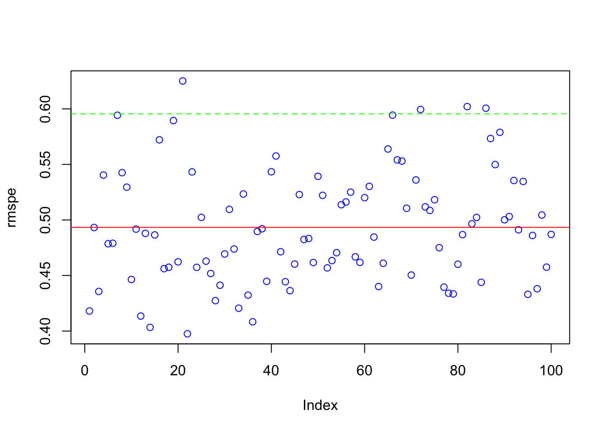
This plot gives insight into model stability. A lower RMSPE indicates better predictive accuracy, while a small standard deviation suggests consistent performance across different test sets.
15.3.1 Variable Importance in GBM
Understanding which variables influence predictions the most is crucial for interpreting gradient boosting models. The gbm package in R provides multiple ways to assess variable importance, including built-in measures and permutation-based methods.
- Built-in
summary.gbm()function.
- Most convenient: Call
summary.gbm(model), where ‘model’ is your fitted gbm model. - Output: This provides a table of variable importance measures calculated based on the sum of improvements that are due to splits on each variable across all trees in the ensemble.
- relative_influence column: The values in this column are normalized so that they add up to 100 , indicating the percentage contribution of each variable.
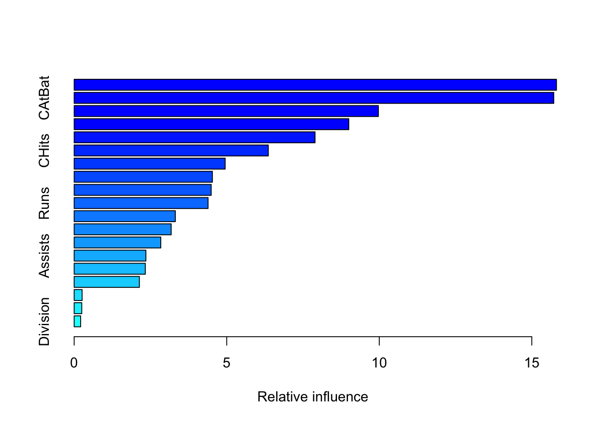
cprod()function and permutation-based importance: Permutation-based importance measures the change in model performance when a specific variable is randomly shuffled. This breaks the relationship between the variable and the outcome, helping to assess its true contribution. While computationally more intensive, this method is often considered more robust than built-in importance scores.
- Use
vip::vi()orvip::cprod(): vi(model, method="permutation")calculates permutation-based importance by randomly shuffling each variable and measuring the decrease in model performance.cprod(model, num_trees = "all")is generally faster, offering a model based importance calculation as an approximation of the permutation approach
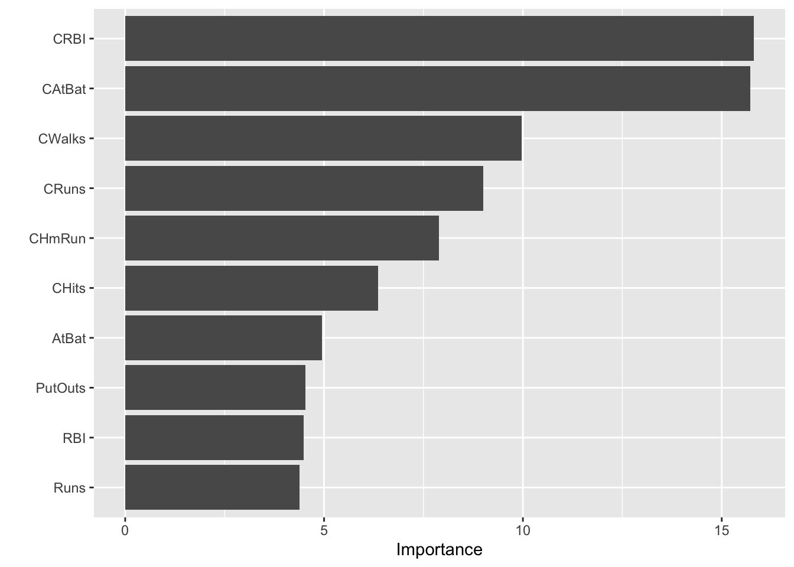
# Colorful VIP plot by variable
vi_df <- vi(gbm.final)
ggplot(vi_df, aes(x = reorder(Variable, Importance), y = Importance, fill = Variable)) +
geom_col() +
coord_flip() +
scale_fill_manual(values = rainbow(nrow(vi_df)), guide = FALSE) +
theme_minimal() +
labs(title = "Variable Importance (GBM)", x = "Variable", y = "Importance")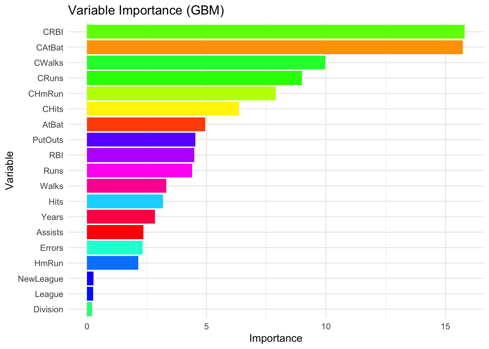
To further visualize and understand how an individual variable influences predictions, we can use partial dependence plots. For example, to examine the impact of CRuns on the predicted salary:
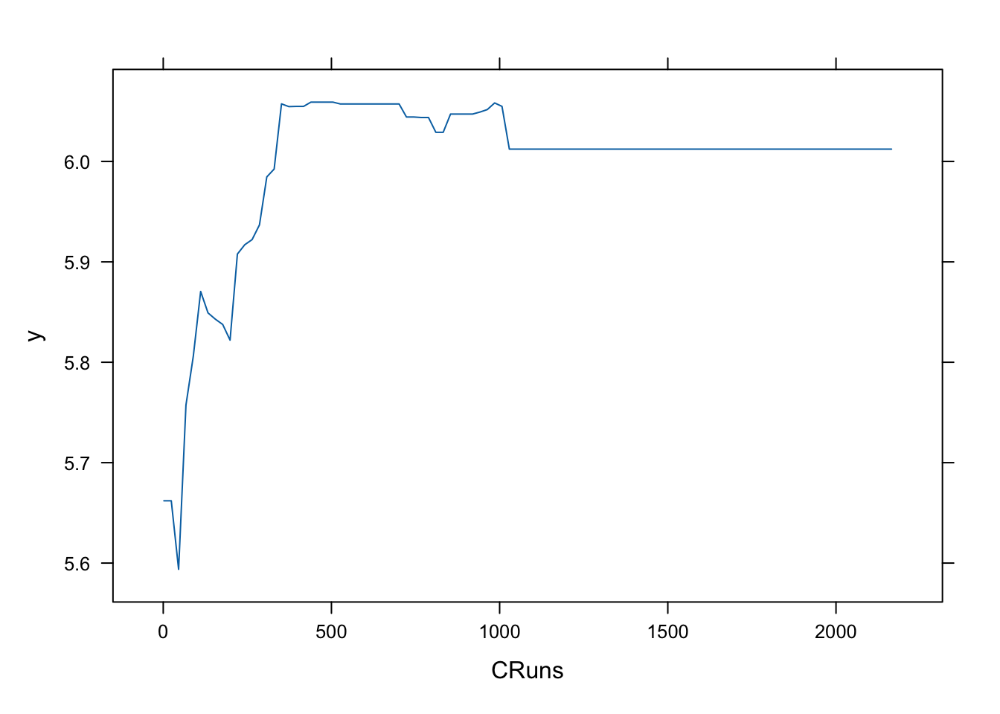
These plots help interpret the functional relationship between predictors and the target variable, revealing whether the effect is linear, nonlinear, or exhibits threshold effects. They complement variable importance measures by showing how changes in a feature affect predictions, not just whether the feature is important.
By combining these methods—built-in importance scores for quick insights, permutation-based importance for robustness, and partial dependence plots for visualization—we can thoroughly assess and interpret the influence of different variables in a gradient boosting model.
15.3.2 External Training
Instead of relying on gbm’s built-in cross-validation, we can perform external training by manually splitting the data, training multiple models, and evaluating their performance across different hyperparameter combinations. This approach allows for more flexibility but is computationally intensive, making it less practical than internal cross-validation for large datasets. We define a range of values for key hyperparameters. We then create a grid of all possible combinations and initialize a column to store the Root Mean Squared Prediction Error (RMSPE).
library(gbm)
h <- seq(0.01, 0.1, 0.01)
B <- c(100, 300, 500, 750, 900)
D <- 1:2
grid <- as.data.frame(expand.grid(D, B, h))
colnames(grid) <- c("D", "B", "h")
grid$rmspe <- rep(0, nrow(grid))We perform bootstrap sampling 20 times for each parameter combination. The dataset is randomly split into training and validation sets, where we fit the gbm model on the training data and evaluate predictions on the validation set.
mse <- c()
sdmse <- c()
for (i in 1:nrow(grid)) {
val_mse <- c()
for (j in 1:20) { try({
set.seed(j)
ind <- sample(nrow(df), nrow(df), replace = TRUE)
train <- df[ind, ]
val <- df[-ind, ]
boos <- gbm(
Salary ~ .,
distribution = "gaussian",
n.trees = 1000,
interaction.depth = grid[i, 1],
shrinkage = grid[i, 3],
bag.fraction = 0.8,
data = train
)
yhat<- predict(boos, val, n.trees = grid[i, 2])
val_mse[j] <- sqrt(mean((val$Salary - yhat)^2))
}, silent = TRUE)
}
grid$rmspe[i] <- mean(val_mse)
}Once all combinations are evaluated, we identify the best-performing set of hyperparameters based on the lowest RMSPE to select the best model.
## D B h rmspe
## 1 2 100 0.07 0.4586446
## 2 2 900 0.01 0.4590531
## 3 2 750 0.01 0.4592292
## 4 2 300 0.03 0.4593989
## 5 2 100 0.08 0.4600807
## 6 2 500 0.02 0.4601794When it is done with a proper grid, this application requires a lot of computational power and it is also lacking test set. So, using the internal training is more practical. We have shown a regression example. The same approach can be used for classification problems. While external validation provides a more flexible approach, it is computationally expensive, especially when using a large grid. Additionally, this method does not include a final holdout test set, meaning it does not provide a true out-of-sample error estimate.
For practical applications, internal training (cross-validation within gbm) is often more efficient and reliable, as it is optimized for selecting the best number of trees and prevents excessive computational overhead. However, external training remains a valuable technique for testing specific hyperparameter settings or when additional control over validation splits is needed.
This example focused on regression, but the same approach applies to classification problems by adjusting the distribution parameter (e.g., "bernoulli" for binary classification).
Next, we explore AdaBoost, another boosting method with a different weighting mechanism.
15.4 AdaBoost
One of the most popular boosting algorithm is AdaBost.M1 due to Freund and Schpire (1997). We consider two-class problem where \(y \in\{-1,1\}\), which is a categorical outcome. With a set of predictor variables \(X\), a classifier \(\hat{m}_{b}(x)\) at tree \(b\) among B trees, produces a prediction taking the two values \(\{-1,1\}\).
To understand how AdaBoost works, let’s look at the algorithm step by step:
- Select the number of trees B, and the tree depth D;
- Set initial weights, \(w_i=1/n\), for each observation.
- Fit a classification tree \(\hat{m}_{b}(x)\) at \(b=1\), the first tree.
- Calculate the following misclassification error for \(b=1\):
\[ \mathbf{err}_{b=1}=\frac{\sum_{i=1}^{n} \mathbf{I}\left(y_{i} \neq \hat{m}_{b}\left(x_{i}\right)\right)}{n} \]
- By using this error, calculate
\[ \alpha_{b}=0.5\log \left(\frac{1-e r r_{b}}{e r r_{b}}\right) \]
For example, suppose \(err_b = 0.3\), then \(\alpha_{b}=\text{log}(0.7/0.3)\), which is a log odds or \(\log (\text{success}/\text{failure})\).
- If the observation \(i\) is misclassified, update its weights, if not, use \(w_i\) which is \(1/n\):
\[ w_{i} \leftarrow w_{i} e^{\alpha_b} \]
Let’s try some numbers:
## [1] 0.6931472## [1] 2So, the new weight for the misclassified \(i\) in the second tree (i.e., \(b=2\) stump) will be
## [1] 0.02## [1] 0.005This shows that as the misclassification error goes up, it increases the weights for each misclassified observation and reduces the weights for correctly classified observations.
- With this procedure, in each loop from \(b\) to B, it applies \(\hat{m}_{b}(x)\) to the data using updated weights \(w_i\) in each \(b\):
\[ \mathbf{err}_{b}=\frac{\sum_{i=1}^{n} w_{i} \mathbf{I}\left(y_{i} \neq \hat{m}_{b}\left(x_{i}\right)\right)}{\sum_{i=1}^{n} w_{i}} \]
We normalize all weights between 0 and 1 so that sum of the weights would be one in each iteration. These individual weights give higher probabilities for misclassified observations in the next tree. In the rpart package, for example, the weights can be assigned to each observation in the data set and are used to adjust the impurity measure when splitting the nodes of the tree. By setting the “weights” argument in the rpart function, we can assign different weights to different observations. Observations with higher weights will have a greater impact on the impurity measure and therefore, on the splitting decisions made by the algorithm.
Here is an example with the myocarde data that we only use the first 6 observation:
library(readr)
myocarde <- read_delim("myocarde.csv", delim = ";" ,
escape_double = FALSE, trim_ws = TRUE,
show_col_types = FALSE)
myocarde <- data.frame(myocarde)
df <- head(myocarde)
df$Weights = 1 / nrow(df)
df## FRCAR INCAR INSYS PRDIA PAPUL PVENT REPUL PRONO Weights
## 1 90 1.71 19.0 16 19.5 16.0 912 SURVIE 0.1666667
## 2 90 1.68 18.7 24 31.0 14.0 1476 DECES 0.1666667
## 3 120 1.40 11.7 23 29.0 8.0 1657 DECES 0.1666667
## 4 82 1.79 21.8 14 17.5 10.0 782 SURVIE 0.1666667
## 5 80 1.58 19.7 21 28.0 18.5 1418 DECES 0.1666667
## 6 80 1.13 14.1 18 23.5 9.0 1664 DECES 0.1666667Suppose that our first stump misclassifies the first observation. So the error rate
## [1] 0.804719## [1] 2.236068## [1] 0.372678## [1] 0.0745356Hence, our new sample weights
df$New_weights <- c(weight_miss, rep(weight_corr, 5))
df$Norm_weights <- df$New_weight / sum(df$New_weight) # normalizing
# Not reporting X's for now
df[, 8:11]## PRONO Weights New_weights Norm_weights
## 1 SURVIE 0.1666667 0.3726780 0.5
## 2 DECES 0.1666667 0.0745356 0.1
## 3 DECES 0.1666667 0.0745356 0.1
## 4 SURVIE 0.1666667 0.0745356 0.1
## 5 DECES 0.1666667 0.0745356 0.1
## 6 DECES 0.1666667 0.0745356 0.1We can see that the misclassified observation (the first one) has 5 times more likelihood than the other correctly classified observations. Let’s see a simple example how weights affect Gini and a simple tree:
# Define the class labels and weights
class_labels <- c(1, 1, 1, 0, 0, 0)
weights <- rep(1/length(class_labels), length(class_labels))
# Calculate the proportion of each class
class_prop <- table(class_labels) / length(class_labels)
# Calculate the Gini index
gini_index <- 1 - sum(class_prop^2)
print(gini_index)## [1] 0.5# Change the weight of the first observation to 0.5
weights[1] <- 0.5
weights[2:6] <- 0.1
# Recalculate the class proportions and Gini index
weighted_table <- tapply(weights, class_labels, sum)
class_prop <- weighted_table / sum(weights)
gini_index <- 1 - sum(class_prop^2)
print(gini_index)## [1] 0.42Notice how the change in the weight of the first observation affects the Gini index. The weights assigned to the observations in a decision tree can affect the splitting decisions made by the algorithm, and therefore can change the split point of the tree.
In general, observations with higher weights will have a greater influence on splitting decisions of the decision tree. This is because the splitting criterion used by the decision tree algorithm, such as the Gini index or information gain, takes the weights of the observations into account when determining the best split. If there are observations with very high weights, they may dominate the splitting decisions and cause the decision tree to favor a split that is optimal for those observations, but not necessarily for the entire data set.
library(rpart.plot)
# Define the data
x <- c(2, 4, 6, 8, 10, 12)
y <- c(0, 1, 1, 0, 0, 0)
weights1 <- rep(1/length(y), length(y))
weights2 <- c(0.95, 0.01, 0.01, 0.01, 0.01, 0.01)
# Build the decision tree with equal weights
library(rpart)
fit1 <- rpart(y ~ x, weights = weights1,
control =rpart.control(minsplit =1,minbucket=1, cp=0))
# Build the decision tree with different weights
fit2 <- rpart(y ~ x, weights = weights2,
control =rpart.control(minsplit =1,minbucket=1, cp=0))
prp(fit1)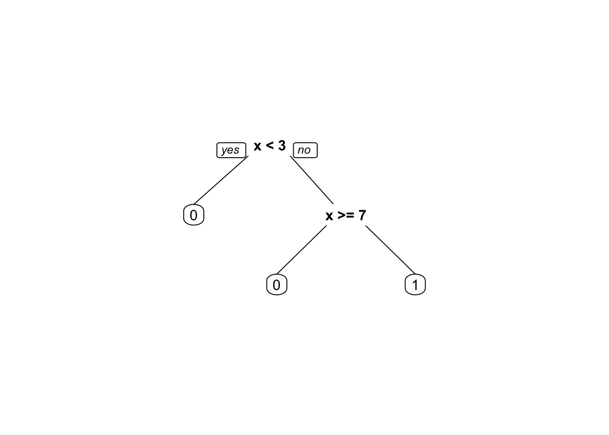
By comparing the two decision trees, we can see that the weights have a significant impact on the splitting decisions made by the algorithm. In the decision tree built with equal weights, the algorithm splits on \(x <= 7\) and then on \(x < 3\) to separate the two classes. In contrast, in the decision tree built with different weights, the algorithm first splits on \(x < 3\) to separate the first observation with \(y = 0\) from the rest of the data. This split favors the first observation, which has a higher weight, and results in a simpler decision tree with fewer splits.
Hence, observations that are misclassified will have more influence in the next classifier. This is an incredible boost that forces the classification tree to adjust its prediction to do better job for misclassified observations.
- Finally, in the output, the contributions from classifiers that fit the data better are given more weight (a larger \(\alpha_b\) means a better fit). Unlike a random forest algorithm where each tree gets an equal weight in final decision, here some stumps get more say in final classification. Moreover, “forest of stumps” the order of trees is important.
Hence, the final prediction on \(y_i\) will be combined from all trees, \(b\) to B, through a weighted majority vote:
\[ \hat{y}_{i}=\operatorname{sign}\left(\sum_{b=1}^{B} \alpha_{b} \hat{m}_{b}(x)\right) \]
which is a signum function defined as follows:
\[ \operatorname{sign}(x):=\left\{\begin{array}{ll} {-1} & {\text { if } x<0} \\ {0} & {\text { if } x=0} \\ {1} & {\text { if } x>0} \end{array}\right. \]
Here is a simple simulation to show how \(\alpha_b\) will make the importance of each tree (\(\hat{m}_{b}(x)\)) different:
n = 1000
set.seed(1)
err <- sample(seq(0, 1, 0.01), n, replace = TRUE)
alpha = 0.5 * log((1 - err) / err)
ind = order(err)
plot(
err[ind],
alpha[ind],
xlab = "error (err)",
ylab = "alpha",
type = "o",
col = "red",
lwd = 2
)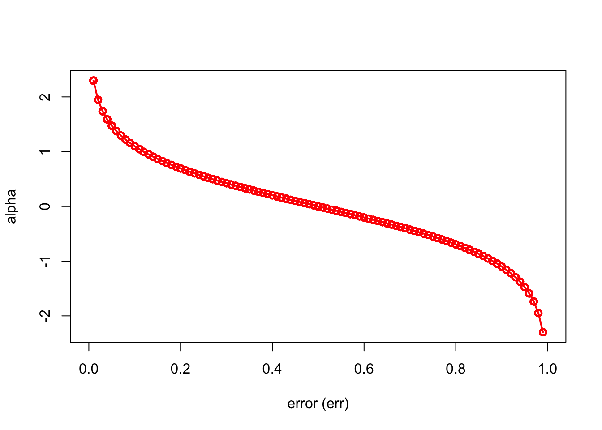
We can see that when there is no misclassification error (err = 0), “alpha” will be a large positive number. When the classifier very weak and predicts as good as a random guess (err = 0.5), the importance of the classifier will be 0. If all the observations are incorrectly classified (err = 1), our alpha value will be a negative integer.
The AdaBoost.M1 is known as a “discrete classifier” because it directly calculates discrete class labels \(\hat{y}_i\), rather than predicted probabilities, \(\hat{p}_i\).
What type of classifier, \(\hat{m}_{b}(x)\), would we choose? Usually a “weak classifier” like a “stump” (a two terminal-node classification tree, i.e one split) would be enough. The \(\hat{m}_{b}(x)\) choose one variable to form a stump that gives the lowest Gini index.
Here is our simple example with the myocarde data to show how we can boost a simple weak learner (stump) by using AdaBoost algorithm:
library(rpart)
# Data
myocarde <- read_delim("myocarde.csv", delim = ";" ,
escape_double = FALSE, trim_ws = TRUE,
show_col_types = FALSE)
myocarde <- data.frame(myocarde)
y <- (myocarde[ , "PRONO"] == "SURVIE") * 2 - 1
x <- myocarde[ , 1:7]
df <- data.frame(x, y)
# Setting
rnd = 100 # number of rounds
m = nrow(x)
whts <- rep(1 / m, m) # initial weights
st <- list() # container to save all stumps
alpha <- vector(mode = "numeric", rnd) # container for alpha
y_hat <- vector(mode = "numeric", m) # container for final predictions
set.seed(123)
for(i in 1:rnd) {
st[[i]] <- rpart(y ~., data = df, weights = whts, maxdepth = 1, method = "class")
yhat <- predict(st[[i]], x, type = "class")
yhat <- as.numeric(as.character(yhat))
e <- sum((yhat != y) * whts)
# alpha
alpha[i] <- 0.5 * log((1 - e) / e)
# Updating weights
whts <- whts * exp(-alpha[i] * y * yhat)
# Normalizing weights
whts <- whts / sum(whts)
}
# Using each stump for final predictions
for (i in 1:rnd) {
pred = predict(st[[i]], df, type = "class")
pred = as.numeric(as.character(pred))
y_hat = y_hat + (alpha[i] * pred)
}
# Let's see what y_hat is
y_hat## [1] 3.132649 -4.135656 -4.290437 7.547707 -3.118702 -6.946686
## [7] 2.551433 1.960603 9.363346 6.221990 3.012195 6.982287
## [13] 9.765139 8.053999 8.494254 7.454104 4.112493 5.838279
## [19] 4.918513 9.514860 9.765139 -3.519537 -3.172093 -7.134057
## [25] -3.066699 -4.539863 -2.532759 -2.490742 5.412605 2.903552
## [31] 2.263095 -6.718090 -2.790474 6.813963 -5.131830 3.680202
## [37] 3.495350 3.014052 -7.435835 6.594157 -7.435835 -6.838387
## [43] 3.951168 5.091548 -3.594420 8.237515 -6.718090 -9.582674
## [49] 2.658501 -10.282682 4.490239 9.765139 -5.891116 -5.593352
## [55] 6.802687 -2.059754 2.832103 7.655197 10.635851 9.312842
## [61] -5.804151 2.464149 -5.634676 1.938855 9.765139 7.023157
## [67] -6.078756 -7.031840 5.651634 -1.867942 9.472835## y
## pred -1 1
## -1 29 0
## 1 0 42This is our in-sample confusion table. We can also see several stumps:
library(rpart.plot)
plt <- c(1,5,10,30, 60, 90)
p = par(mfrow=c(2,3))
for(i in 1:length(plt)){
prp(st[[i]], type = 2, extra = 1, split.col = "red",
split.border.col = "blue", box.col = "pink")
}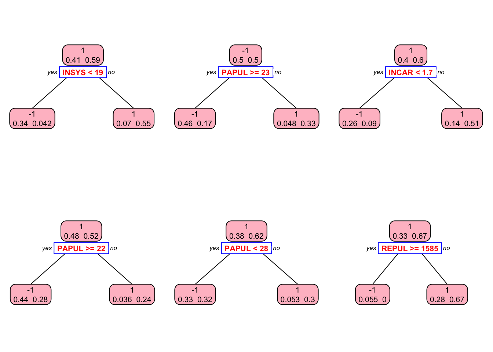
Let’s see it with the JOUSBoost package:
## Length Class Mode
## alphas 100 -none- numeric
## trees 100 -none- list
## tree_depth 1 -none- numeric
## terms 3 terms call
## confusion_matrix 4 table numeric## y
## pred -1 1
## -1 29 0
## 1 0 42These results provide in-sample predictions. When we use it in a real example, we can train AdaBoost.M1 by the tree depths (1 in our example) and the number of iterations (100 trees in our example). Note that we can also use gbm for adaboost type classifications.
15.5 XGBoost
XGBoost, or Extreme Gradient Boosting, is the most efficient implementation of the gradient boosting framework, optimized for speed and scalability. A key reason for its efficiency is its ability to perform parallel computation on a single machine, significantly reducing training time compared to traditional gradient boosting methods. It supports both regression and classification problems, offering two distinct modes: a linear model and a tree-based learning algorithm. While decision trees generally excel at capturing nonlinear relationships between predictors and outcomes, XGBoost’s linear model mode allows for regularization, making it useful for cases where a more traditional parametric structure may be preferable. Comparing the performance of the linear and tree-based modes can provide valuable insights into model selection, particularly in causal analyses.
One of XGBoost’s standout advantages is its speed, reported to be “10 times faster than gbm” according to its official documentation37. This efficiency stems not only from its optimized tree-growing strategy but also from its ability to handle sparse data efficiently. XGBoost can work with compressed input formats, such as sparse matrices, where only nonzero values are stored in memory. This makes it particularly useful for large datasets with many zero or missing values, common in high-dimensional econometric applications. However, using this structure requires specific data preparation steps: the input features must be formatted as a matrix, and categorical variables need to be properly encoded. XGBoost supports multiple matrix types, including regular R matrices, sparse matrices from the Matrix package, and its own optimized xgb.Matrix class. These features, combined with its speed, regularization options, and adaptability to both linear and nonlinear settings, have made XGBoost the dominant boosting method in both academic and applied settings.
We start with a regression example here and leave the classification example to the next chapter in boosting applications. We will use the Ames housing data from the AmesHousing package to see the best “predictors” of the sale price.
library(xgboost)
library(mltools)
library(data.table)
library(modeldata) # Also available via tidymodels
# Load the Ames housing dataset
data(ames)
dim(ames)## [1] 2930 74Since, the xgboost algorithm accepts its input data as a matrix, all categorical variables have be one-hot coded, which creates a large matrix even with a small size data. That is why using more memory efficient matrix types (sparse matrix etc.) speeds up the process. We ignore it here and use a regular R matrix, for now.
ames_new <- one_hot(as.data.table(ames))
df <- as.data.frame(ames_new)
# Split data into training and testing sets
set.seed(123)
ind <- sample(nrow(df), nrow(df) * 0.8) # 80% training, 20% test
train <- df[ind,]
test <- df[-ind,]
# Prepare matrices for XGBoost
X <- as.matrix(train[, -which(names(train) == "Sale_Price")])
Y <- train$Sale_PriceNow we are ready for finding the optimal tuning parameters. One strategy in tuning is to see if there is a substantial difference between train and CV errors. We first start with the number of trees and the learning rate. If the difference still persists, we introduce regularization parameters. There are three regularization parameters: gamma, lambda, and alpha.
gamma: Controls tree pruning by setting a minimum loss reduction threshold.lambda: L2 regularization term (similar to Ridge Regression).alpha: L1 regularization term (similar to Lasso Regression).
15.5.1 Regression Example
Here is our first run without a grid search. We will have a regression tree. The default booster is gbtree for tree-based models. For linear models it should be set to gblinear. The number of parameters and their combinations are very extensive in XGBoost. Please see them here: https://xgboost.readthedocs.io/en/latest/parameter.html#global-configuration. The combination of parameters we picked below is just an example.
#
params = list(
eta = 0.1, # Step size in boosting (default is 0.3)
max_depth = 3, # maximum depth of the tree (default is 6)
min_child_weight = 3, # minimum number of instances in each node
subsample = 0.8, # Subsample ratio of the training instances
colsample_bytree = 1.0 # the fraction of columns to be subsampled
)
set.seed(123)
boost <- xgb.cv(
data = X,
label = Y,
nrounds = 3000, # the max number of iterations
nthread = 4, # the number of CPU cores
objective = "reg:squarederror", # regression tree
early_stopping_rounds = 50, # Stop if doesn't improve after 50 rounds
nfold = 10, # 10-fold-CV
params = params,
verbose = 0 #silent
) Let’s see the RMSE and the best iteration:
## [1] 561## [1] 24562.31# One possible grid would be:
# param_grid <- expand.grid(
# eta = 0.01,
# max_depth = 3,
# min_child_weight = 3,
# subsample = 0.5,
# colsample_bytree = 0.5,
# gamma = c(0, 1, 10, 100, 1000),
# lambda = seq(0, 0.01, 0.1, 1, 100, 1000),
# alpha = c(0, 0.01, 0.1, 1, 100, 1000)
# )
# After going through the grid in a loop with `xgb.cv`
# we save multiple `test_rmse_mean` and `best_iteration`
# and find the parameters that gives the minimum rmseNow after identifying the tuning parameters, we build the best model:
tr_model <- xgboost(
params = params,
data = X,
label = Y,
nrounds = best_it,
objective = "reg:squarederror",
verbose = 0
)We can obtain the top 10 influential features in our final model using the impurity (gain) metric:
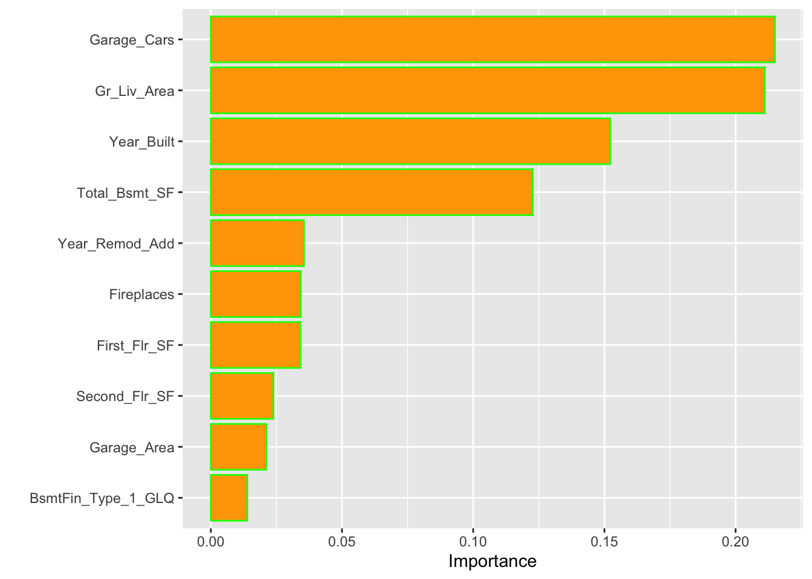
Now, we can use our trained model for predictions using our test set. Note that, again, xgboost would only accept matrix inputs.
yhat <- predict(tr_model,
as.matrix(test[, -which(names(test) == "Sale_Price")]))
rmse_test <-
sqrt(mean((test[, which(names(train) == "Sale_Price")] - yhat) ^ 2))
rmse_test## [1] 22529.54Note the big difference between training and test RMSPE’s. This is an indication that our “example grid” is not doing a good job. We should include regularization tuning parameters and run a full scale grid search.
15.5.2 Classification Example
It uses spacial data preparation and it is not as straightforward as GBM.
Input Type: it takes several types of input data:
- Dense Matrix: R’s dense matrix, i.e.
matrix; - Sparse Matrix: R’s sparse matrix, i.e.
Matrix::dgCMatrix; - Data File: local data files;
xgb.DMatrix: its own class (recommended).
Example from the documentation
In this example, we are aiming to predict whether a mushroom can be eaten or not (from Vignette). The data is from UCI Machine Learning Repository. The data has 22 features and 8124 observations. The target variable is class and it has two levels: e (edible) and p (poisonous). Mushroom data is cited from UCI Machine Learning Repository.
library(xgboost)
data(agaricus.train, package='xgboost')
data(agaricus.test, package='xgboost')
train <- agaricus.train
test <- agaricus.test
str(train)## List of 2
## $ data :Formal class 'dgCMatrix' [package "Matrix"] with 6 slots
## .. ..@ i : int [1:143286] 2 6 8 11 18 20 21 24 28 32 ...
## .. ..@ p : int [1:127] 0 369 372 3306 5845 6489 6513 8380 8384 10991 ...
## .. ..@ Dim : int [1:2] 6513 126
## .. ..@ Dimnames:List of 2
## .. .. ..$ : NULL
## .. .. ..$ : chr [1:126] "cap-shape=bell" "cap-shape=conical" "cap-shape=convex" "cap-shape=flat" ...
## .. ..@ x : num [1:143286] 1 1 1 1 1 1 1 1 1 1 ...
## .. ..@ factors : list()
## $ label: num [1:6513] 1 0 0 1 0 0 0 1 0 0 ...Each variable is a list containing two things, label and data. The label is the target variable and data is the feature matrix.
## [1] 6513 126## [1] 1611 126In a sparse matrix, cells containing 0 are not stored in memory. Therefore, in a dataset mainly made of 0, memory size is reduced. It is very common to have such a dataset.
## 6 x 126 sparse Matrix of class "dgCMatrix"## [[ suppressing 126 column names 'cap-shape=bell', 'cap-shape=conical', 'cap-shape=convex' ... ]]##
## [1,] . . 1 . . . . . . 1 1 . . . . . . . . . 1 . . . . . . . . 1 . . . 1 . 1 .
## [2,] . . 1 . . . . . . 1 . . . . . . . . . 1 1 . 1 . . . . . . . . . . 1 . 1 .
## [3,] 1 . . . . . . . . 1 . . . . . . . . 1 . 1 . . 1 . . . . . . . . . 1 . 1 .
## [4,] . . 1 . . . . . 1 . . . . . . . . . 1 . 1 . . . . . . . . 1 . . . 1 . 1 .
## [5,] . . 1 . . . . . . 1 . . . 1 . . . . . . . 1 . . . . . . 1 . . . . 1 . . 1
## [6,] . . 1 . . . . . 1 . . . . . . . . . . 1 1 . 1 . . . . . . . . . . 1 . 1 .
##
## [1,] . . 1 1 . . . . . . . . . . . 1 . . . . 1 . . . . . . 1 . . . 1 . . . . .
## [2,] . 1 . 1 . . . . . . . . . . . 1 . . 1 . . . . . . . . 1 . . . 1 . . . . .
## [3,] . 1 . . 1 . . . . . . . . . . 1 . . 1 . . . . . . . . 1 . . . 1 . . . . .
## [4,] . . 1 . 1 . . . . . . . . . . 1 . . . . 1 . . . . . . 1 . . . 1 . . . . .
## [5,] . 1 . 1 . . . . . . . . . . . . 1 . . . 1 . . . . . . 1 . . . 1 . . . . .
## [6,] . 1 . . 1 . . . . . . . . . . 1 . . 1 . . . . . . . . 1 . . . 1 . . . . .
##
## [1,] . . 1 . . . . . . . . 1 . 1 . . . 1 . . 1 . . . . . . 1 . . 1 . . . . . .
## [2,] . . 1 . . . . . . . . 1 . 1 . . . 1 . . 1 . . . . . . 1 . . . 1 . . . . .
## [3,] . . 1 . . . . . . . . 1 . 1 . . . 1 . . 1 . . . . . . 1 . . . 1 . . . . .
## [4,] . . 1 . . . . . . . . 1 . 1 . . . 1 . . 1 . . . . . . 1 . . 1 . . . . . .
## [5,] . . 1 . . . . . . . . 1 . 1 . . . 1 . . 1 . . 1 . . . . . . . 1 . . . . .
## [6,] . . 1 . . . . . . . . 1 . 1 . . . 1 . . 1 . . . . . . 1 . . 1 . . . . . .
##
## [1,] . . . . . 1 . . . . . . 1 . .
## [2,] . . . . 1 . . . 1 . . . . . .
## [3,] . . . . 1 . . . . . 1 . . . .
## [4,] . . . . . 1 . . . . . . 1 . .
## [5,] . . 1 . . . . . 1 . . . . . .
## [6,] . . . . 1 . . . 1 . . . . . .Here is our model:
Sparse Matrix
stSparse <- xgboost(data = train$data,
label = train$label,
max.depth = 2, eta = 1,
nthread = 2,
nrounds = 2,
objective = "binary:logistic")## [1] train-logloss:0.233376
## [2] train-logloss:0.136658Dense Matrix
stDense <- xgboost(data = as.matrix(train$data),
label = train$label,
max.depth = 2, eta = 1,
nthread = 2,
nrounds = 2,
objective = "binary:logistic")## [1] train-logloss:0.233376
## [2] train-logloss:0.136658xgb.DMatrix
dtrain <- xgb.DMatrix(data = train$data, label = train$label)
dtest <- xgb.DMatrix(data = test$data, label = test$label)
stDMatrix <- xgboost(data = dtrain,
max.depth = 2, eta = 1,
nthread = 2,
nrounds = 2,
objective = "binary:logistic")## [1] train-logloss:0.233376
## [2] train-logloss:0.136658Predictions
Here are your phat values:
predSparse <- predict(stSparse, test$data)
predDense <- predict(stDense, as.matrix(test$data))
predDMatrix <- predict(stDMatrix, dtest)
head(predSparse)## [1] 0.28583017 0.92392391 0.28583017 0.28583017 0.05169873 0.92392391## [1] 0.28583017 0.92392391 0.28583017 0.28583017 0.05169873 0.92392391## [1] 0.28583017 0.92392391 0.28583017 0.28583017 0.05169873 0.92392391You can go with AUC and or confusion matrix to evaluate the model.
# AUC
library(ROCR)
predSparse <- prediction(predSparse, test$label)
aucSparse <- performance(predSparse, "auc")
aucSparse@y.values[[1]]## [1] 0.9799301## Loading required package: latticeprediction <- unlist(predSparse@predictions)
yhat <- as.numeric(prediction > 0.5)
yhat_factor <- factor(yhat, levels = unique(test$label))
test_label_factor <- factor(test$label)
confusionMatrix(yhat_factor, test_label_factor, positive = "1")## Confusion Matrix and Statistics
##
## Reference
## Prediction 0 1
## 0 813 13
## 1 22 763
##
## Accuracy : 0.9783
## 95% CI : (0.9699, 0.9848)
## No Information Rate : 0.5183
## P-Value [Acc > NIR] : <2e-16
##
## Kappa : 0.9565
##
## Mcnemar's Test P-Value : 0.1763
##
## Sensitivity : 0.9832
## Specificity : 0.9737
## Pos Pred Value : 0.9720
## Neg Pred Value : 0.9843
## Prevalence : 0.4817
## Detection Rate : 0.4736
## Detection Prevalence : 0.4873
## Balanced Accuracy : 0.9785
##
## 'Positive' Class : 1
## 15.5.3 Tuning in XGBoost
Tuning is essential for maximizing the performance of XGBoost models, striking a balance between accuracy, computational efficiency, and generalization. XGBoost offers two primary functions for training: xgboost(), which provides a straightforward approach, and xgb.train(), which allows for more control over training, including monitoring model performance at each iteration and implementing early stopping. Early stopping is particularly useful as it prevents unnecessary computation by halting training when improvements become negligible.
XGBoost parameters can be categorized into three broad groups: those that govern how individual boosting steps are performed (booster parameters), those that guide the optimization process (tuning parameters), and those that control how model performance is evaluated (evaluation parameters). Understanding these categories provides a structured approach to tuning.
Booster Parameters: Controlling the Learning Process
XGBoost supports different types of base models for boosting, most commonly tree-based models (gbtree) and linear models (gblinear). The choice of booster influences how predictions are made: trees excel at capturing complex interactions, while linear models provide a regularized alternative for structured data. A variant called "dart" adds dropout to trees to reduce overfitting.
The learning rate (eta) is one of the most important parameters, as it controls the contribution of each tree to the final prediction. A small learning rate (e.g., 0.01) leads to a more stable model but requires more boosting iterations to converge, while larger values speed up training at the cost of potential overfitting. Tree depth (max_depth) also plays a crucial role—deeper trees can capture more intricate patterns but risk overfitting, whereas shallower trees promote simplicity.
Other parameters refine how trees are constructed. min_child_weight determines the minimum sum of weights required for a node split, helping to control tree size by discouraging splits on small sample sizes. gamma sets a threshold for the minimum loss reduction needed to make a further split; higher values result in more conservative trees. To introduce randomness and prevent trees from being too correlated, subsampling (subsample) controls the fraction of data used for each tree, while feature sampling (colsample_bytree) determines the fraction of features considered at each split.
Tuning Parameters: Optimizing for Performance
Beyond individual trees, XGBoost provides several ways to improve generalization and prevent overfitting. Regularization is an integral part of this process, with L2 regularization (lambda) applying a penalty on large weights to prevent overfitting, while L1 regularization (alpha) encourages sparsity by forcing some feature coefficients to zero, effectively performing variable selection. These regularization parameters are particularly useful when dealing with high-dimensional data or highly correlated features.
Another critical tuning parameter is early stopping, controlled via early_stopping_rounds, which allows training to halt if performance on a validation set does not improve after a specified number of rounds. This helps prevent overfitting while saving computation time. The number of boosting rounds (n_estimators) also needs careful tuning—higher values allow more complex patterns to be captured but should be balanced against the learning rate.
When working with imbalanced datasets, XGBoost provides scale_pos_weight, which adjusts the balance between positive and negative classes. This is particularly useful in classification problems where one class is underrepresented, such as fraud detection or rare event prediction.
Evaluation Parameters: Assessing Model Performance
Performance evaluation in XGBoost is highly customizable. The eval_metric parameter specifies the metric used to assess model quality during training. For regression tasks, root mean squared error (rmse) is commonly used, while classification problems often rely on log loss (logloss) for binary classification and area under the curve (auc) for imbalanced datasets. For multiclass classification, misclassification error (merror) or probability-based metrics like softmax loss (mlogloss) can be selected.
Additionally, the objective parameter determines the loss function optimized during training. Regression tasks typically use squared error loss (reg:squarederror), while classification tasks can use logistic loss (binary:logistic) for binary classification or softmax (multi:softprob) for multiclass problems. The ability to customize loss functions provides flexibility for handling different types of predictive modeling tasks.
Extending Tuning Beyond the Basics
While we have covered the core tuning concepts, XGBoost’s tuning capabilities are extensive, and optimal parameter selection often depends on the specific dataset and problem type. The interplay between different parameters—such as the trade-off between eta and n_estimators, or how max_depth interacts with gamma—requires iterative testing and validation. Grid search and Bayesian optimization techniques can further refine hyperparameter selection beyond manual tuning.
For more in-depth guides on tuning XGBoost, practical examples, and real-world applications, the following resources provide excellent insights:
- XGBoost Official Documentation (xgboost.readthedocs.io)
- “XGBoost: A Scalable Tree Boosting System” (Chen & Guestrin, 2016) – Original research paper describing the methodology behind XGBoost.
- Hyperparameter tuning guides from platforms like Kaggle, which demonstrate practical parameter selection strategies.
- The
mlrandcaretR packages, which provide tools for systematic hyperparameter tuning, including grid search and Bayesian optimization.
Tuning XGBoost effectively requires a mix of theoretical understanding and practical experimentation. While this chapter provides a structured approach to tuning, further refinements often emerge from hands-on experience with different datasets and validation techniques.
15.6 The Implementation of Boosting Methods
Boosting methods have been increasingly applied across multiple disciplines, particularly in economics, social sciences, and health sciences, as a powerful tool for predictive modeling and decision-making. This section explores the implementation of boosting methods in different practical settings and with different programming languages.
Boosting algorithms have been successfully used in economic forecasting, financial modeling, and labor market analysis. Jiang, Xu, and Danowski (2025) analyzed social media texts using network analysis and boosting techniques to predict economic trends. Their study showed that boosting-based sentiment analysis improves accuracy in market behavior prediction, offering valuable insights for policymakers. Kueck et al. (2023) applied the L2-Boosting algorithm to estimate treatment effects in scenarios with numerous control variables or instruments. This approach allows for effective variable selection and shrinkage, facilitating more accurate inference in complex economic models. Their empirical studies demonstrated that L2-Boosting can effectively handle datasets where the number of parameters is large relative to the number of observations, providing robust estimates in such challenging contexts. Lindenmeyer and Torrent(2024) applied boosting techniques to monthly macroeconomic data, resulting in more accurate predictions compared to traditional forecasting models.
Piot-Lepetit (2025) applied boosting methods in sustainable food systems, showing that machine learning can optimize agrifood value chains by predicting market demand and improving supply chain efficiency. Similarly, Rahayu et al. (2025) examined the role of boosting algorithms in optimizing domestic product use within government institutions, highlighting its potential to improve resource allocation and economic efficiency.
Handayani (2025) explored the application of boosting techniques in governance and corruption analysis, finding that these methods effectively identify fraudulent financial transactions, thereby aiding anti-corruption measures. Such applications demonstrate the capacity of boosting algorithms to improve the economic decision-making and transparency.
The use of boosting methods in social sciences has primarily focused on understanding human behavior, social interactions, and policy impacts. Sharma and Bangur (2025) investigated circular economy policies and found that boosting models effectively identify factors influencing policy adoption and success. Their findings suggest that machine learning can guide policymakers in designing effective sustainability strategies.
McLean (2025) applied boosting techniques in public engagement research, exploring their effectiveness in predicting civic participation levels based on demographic and behavioral data. This approach provided more precise insights into how different social groups interact with policy initiatives, facilitating targeted interventions. In the realm of digital literacy, Boshnjaku, Krasniqi, and Kamberi (2025) used boosting models to assess the effectiveness of digital health literacy integration in education curricula. Their study found that boosting methods significantly improve predictive accuracy in understanding student engagement with digital health tools.
In healthcare, boosting algorithms have been widely used for disease prediction, medical diagnostics, and healthcare resource optimization. Rajagopal and Subramanian (2025) utilized boosting techniques to improve AI-based edge and fog computing applications in healthcare, demonstrating improved predictive capabilities for patient monitoring systems.
Aliyeva and Aliyev (2025) applied boosting models to assess the environmental impact of healthcare facilities, finding that these techniques provide robust insights into sustainability challenges and resource management in medical institutions. Yildiz and Kalayci (2025) have shown that GBDT algorithms can effectively classify medical conditions, leading to more accurate diagnoses and personalized treatment plans. Tamba, Yanti, and Tamba (2025) analyzed healthcare accessibility in Jakarta, using boosting algorithms to predict the impact of waste management policies on public health. Their findings emphasize the role of machine learning in optimizing environmental health policies.
As machine learning continues to evolve, the integration of boosting techniques in interdisciplinary research is expected to expand and can be implemented in various languages across fields.
While R provides powerful tools like gbm and xgboost, boosting can also be implemented efficiently in Stata and Python, each offering its own advantages in flexibility, scalability, and integration with econometric workflows.
In Stata, boosting is supported through built-in and user-written commands. The most direct way to implement gradient boosting is via the gbm command from Stata’s Machine Learning Suite (stata ml), or through community-contributed packages like boost and xgboost.
The basic approach in Stata involves specifying the response variable and predictors, setting key hyperparameters like the number of trees (ntrees), learning rate (shrinkage), and tree depth (maxdepth), and evaluating performance using cross-validation. For example, a simple GBM model in Stata could be trained using:
This command fits a gradient boosting model to predict salary using age, experience, and education, with 500 boosting rounds, a learning rate of 0.05, and trees with a maximum depth of 3. The inclusion of cv(10) ensures 10-fold cross-validation for tuning purposes.
Alternatively, XGBoost can be used in Stata through integration with Python. The python command in Stata allows users to call xgboost directly, enabling greater flexibility in parameter tuning and performance monitoring.
Python offers extensive support for boosting through libraries like XGBoost (xgboost), LightGBM (lightgbm), and CatBoost (catboost), making it a preferred choice for large-scale applications. The xgboost library, in particular, provides seamless integration with pandas and scikit-learn, allowing users to preprocess data, implement cross-validation, and fine-tune hyperparameters in a streamlined workflow.
Until now, we have covered the fundamental concepts and methodologies used in machine learning, focusing on both predictive accuracy and model generalization. We explored key ideas such as the bias-variance tradeoff, overfitting, and hyperparameter tuning, followed by an in-depth discussion of classification methods and model selection techniques. We then examined regularization methods such as Lasso, which help improve model stability, and ensemble learning approaches, including bagging, random forests, and boosting, which improve predictive power by combining multiple models. Having established a strong foundation in machine learning methods, we now shift our focus to causal inference, beginning with the Rubin causal model and the framework of randomized controlled trials (RCTs). These methods provide the tools needed to move beyond correlation-based predictions and estimate causal effects in observational and experimental settings.
See XGBoost’s vignette at https://xgboost.readthedocs.io/en/stable/R-package/xgboostPresentation.html↩︎